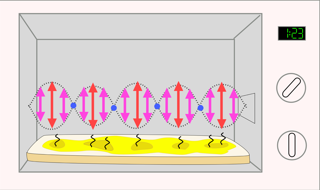
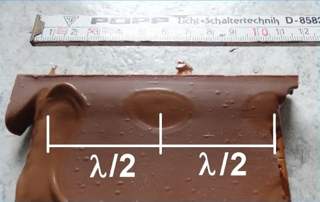

Способ измерения скорости света с помощью микроволновки
Для измерения скорости света не выходя из квартиры вам понадобятся: микроволновая печь, большая плитка шоколада или сырный ломтик, линейка.
В основе принципа действия лежит использование электромагнитных волн, испускаемых магнетроном микроволновой печи. В ходе функционирования устройства возникает стоячая волна, характеризующаяся периодическим чередованием областей с максимальной и минимальной интенсивностью нагрева. Это приводит к неравномерному прогреву продуктов: наиболее интенсивно они нагреваются в зонах с высокой напряжённостью поля, наименее — в зонах с низкой.

Ход работы:
- Удалить поворотный столик, чтобы еда оставалась неподвижной во время работы микроволновки.
- Поместить шоколад или сыр на плоскую тарелку и поставить в микроволновку.
- Включить устройство на минимальной мощности примерно на 20–30 секунд. На поверхности продукта появятся характерные полосы плавления — это и есть места максимальной интенсивности электромагнитных волн.
- Измерить расстояние между соседними полосами плавления — это будет половина длины волны (λ/2). Чтобы получить полную длину волны, умножить полученное значение на два.
- Далее расчет: Скорость света (v) = длина волны (λ) × частота микроволнового излучения (f) (частота обычно указана на задней панели микроволновки)
